- 설치형
- 로컬 AI · 머신러닝
- 계측 장비 범용
계측 데이터에서,
이상 징후를 먼저.
계측 장비가 남긴 기록을 올리면 추이와 알람을 정리하고, 서버 안의 로컬 AI 가 머신러닝으로 평소와 다른 구간을 찾아 장비 상태를 점수로 보여줍니다. 데이터는 설치한 서버 밖으로 나가지 않습니다.
- 모니터링현황판 · 추이 · 알람 · 장비 비교
- 로컬 AI이상 탐지 · 상태 진단 · 7일 예측
- 대상시계열 기록을 남기는 계측 장비
- 속도DuckDB 로 544만 행 집계 0.1초
- 설치Docker 로 서버 한 대, GPU 불필요
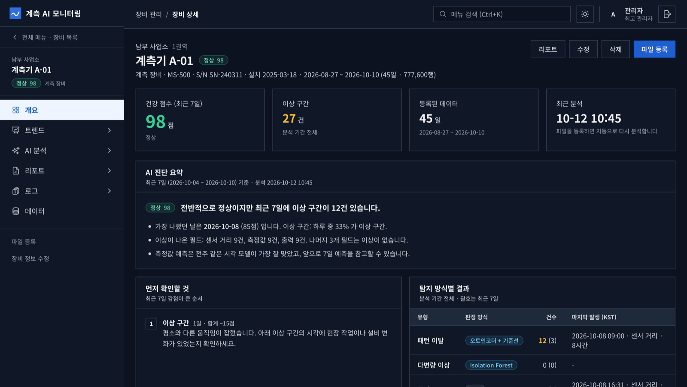
01화면
전체 현황에서 장비 한 대까지,
같은 화면에서 내려갑니다
아래 화면은 시연용으로 만든 데이터(사업소 3곳, 계측기 7대, 45일치)로 찍은 실제 제품입니다. 밝은 테마와 어두운 테마를 모두 지원합니다.
모니터링
현장 · 설비 담당자
- 현황판: 점검이 필요한 장비와 최근 알람·이상
- 추이 차트에 알람 구간과 이상 구간을 띠로 표시
- 장비끼리 같은 지표를 나란히 놓고 유독 다른 값 찾기
- 초 단위 원본, 날짜별 달력, CSV 내보내기
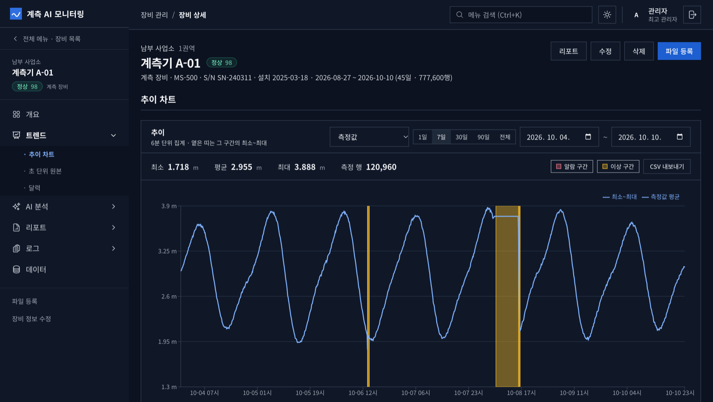
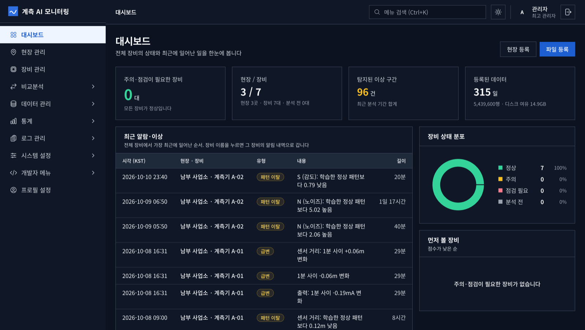
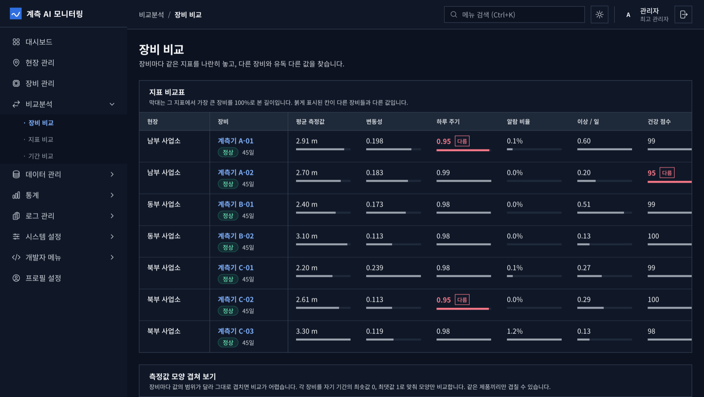
AI 분석
파일을 등록하면 자동으로 실행
- 진단 요약: 가장 나빴던 날과 먼저 확인할 것
- 이상 구간마다 유형, 판정 방식, 강도를 표시
- 앞으로 7일 예측과 모델별 검증 오차
- 필드마다 따로 학습하고 결과도 필드별로
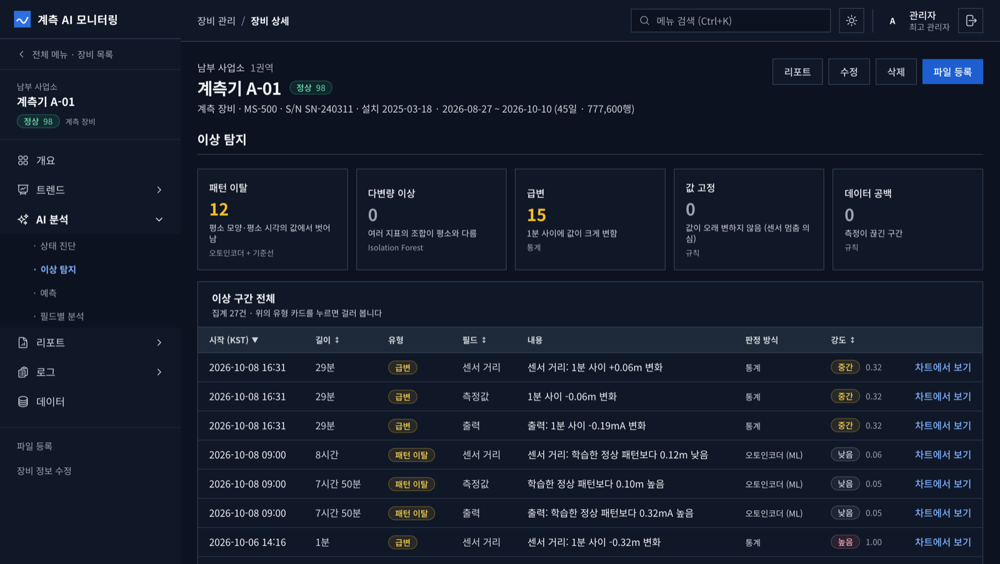
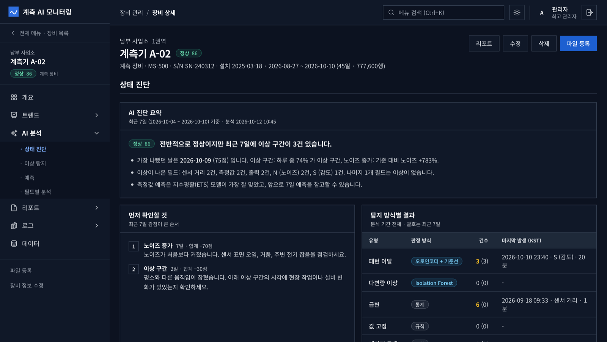
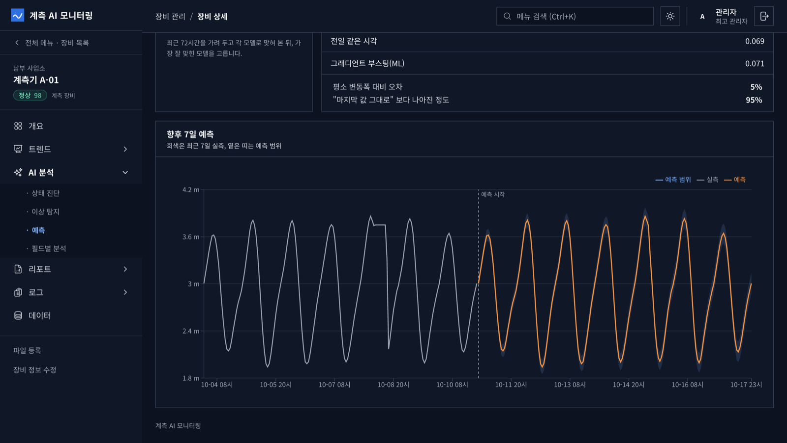
리포트
보고 · 기록용
- 일별, 주간, 월별, 연간, 전체 기간
- 이전 기간과 비교한 점수와 이상 건수
- 화면에서 미리 본 그대로 PDF 로 내려받기
- 엑셀: 요약, 일자별, 이상 구간 시트
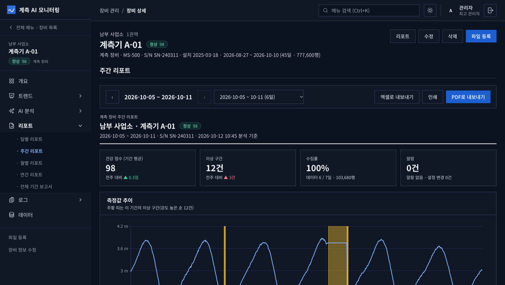
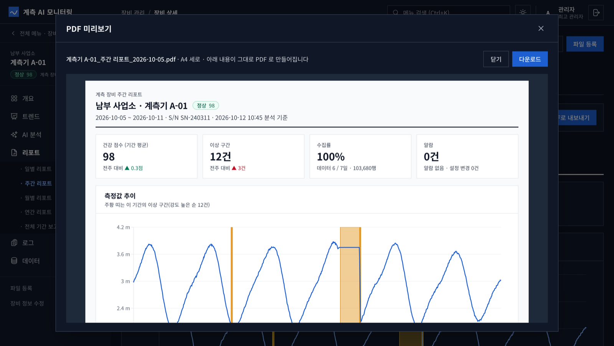
02범용
특정 장비 전용이 아닙니다
시간에 따라 값을 남기는 계측 장비라면 종류에 상관없이 같은 화면과 같은 분석을 씁니다. 장비의 종류는 프로그램에 박혀 있지 않고, 필드 정의로 알려 줍니다.
필드 정의로 장비를 등록
기록의 각 열을 측정값, 알람, 설정값 세 가지로 나눠 정의합니다. 표시 이름, 단위, 배율은 화면에서 바꿉니다.
정상 패턴은 데이터에서 학습
장비별 판정 규칙을 미리 짜 넣지 않습니다. 그 장비의 기록에서 평소 모양을 배우므로, 측정 대상이 달라져도 같은 방식으로 분석합니다.
여러 종류를 한 시스템에서
제품 유형을 여러 개 두고 종류가 다른 장비를 함께 관리합니다. 장비끼리의 비교는 같은 종류 안에서만 합니다.
- 레벨
- 유량
- 압력
- 온도
- 농도
- 전류 · 출력
- 그 밖의 시계열 측정값
처음 받는 기록 형식은 필드 정의를 한 번 추가해야 합니다. 입력은 장비·수집기가 내보낸 csv, csv.gz 파일입니다.
03모니터링
기록을 올리면 정리되는 것
장비에서 받은 기록 파일을 장비별로 등록하는 방식입니다. 현장 하나에 장비를 여러 대 둘 수 있습니다.
현황판
주의·점검이 필요한 장비 수, 전체 장비의 상태 분포, 가장 최근에 일어난 알람과 이상을 한 화면에 모읍니다.
추이와 원본
기간을 골라 지표별 추이를 보고, 알람 구간과 이상 구간을 차트 위에 겹칩니다. 필요하면 초 단위 원본까지 내려갑니다.
알람과 설정 변경
알람이 켜져 있던 구간과 장비 설정값이 바뀐 시점을 기록에서 뽑아 한 목록으로 보여줍니다. 엑셀로 내려받을 수 있습니다.
비교분석
장비 사이, 지표 사이, 기간 사이를 비교합니다. 다른 장비들과 유독 다른 값을 표시합니다.
리포트
장비마다 일별·주간·월별·연간·전체 기간 리포트가 만들어지고, PDF 와 엑셀로 내려받습니다.
계정과 권한
최고 관리자, 관리자, 조회 전용 세 단계입니다. 조회 전용 계정에는 등록·수정·삭제가 보이지 않습니다.
04AI 분석
로컬 AI 가 서버 안에서
머신러닝을 수행합니다
학습과 판정이 모두 설치한 서버에서 돕니다. 이상 구간마다 어느 방식이 잡았는지 화면에 적으므로, 결과를 보고 이유를 따라갈 수 있습니다.
외부 AI 서비스 없이,
내 서버에서 학습하고 판정합니다
기록을 클라우드나 외부 AI 서비스로 보내지 않습니다. 머신러닝 모델은 서버의 CPU 로 학습하며 GPU 가 필요 없고, 인터넷이 끊긴 폐쇄망에서도 그대로 동작합니다.
- 기록 등록 — 장비별로 파일을 올리면 분석이 자동으로 시작됩니다.
- 머신러닝 학습 — 그 장비의 최근 기록으로, 측정 필드마다 따로 학습합니다.
- 판정과 예측 — 평소와 다른 구간을 찾고 앞으로 7일을 예측합니다.
- 결과 표시 — 건강 점수, 이상 구간, 판정 방식을 화면과 리포트에 남깁니다.
| 분석 | 방식 | 구분 | 찾는 것 |
|---|---|---|---|
| 패턴 이탈 | 오토인코더(신경망) + 시각대 기준선 | 머신러닝 | 정상적인 하루 모양을 학습해 두고, 평소 모양이나 평소 시각의 값에서 벗어난 구간 |
| 다변량 이상 | Isolation Forest | 머신러닝 | 지표 하나하나는 정상 범위인데 조합이 평소와 다른 시점 |
| 예측 | 그래디언트 부스팅 · 지수평활(ETS) · 전주/전일 반복 | 머신러닝 통계 | 앞으로 7일. 최근 72시간을 가려 두고 맞혀 보게 해서 오차가 가장 작은 모델을 고릅니다 |
| 급변 | 중앙값 기준 편차 | 통계 | 1분 사이에 값이 평소 변화폭보다 크게 바뀐 순간 |
| 값 고정 · 공백 | 규칙 | 규칙 | 값이 오래 그대로인 구간(센서 멈춤 의심)과 측정이 끊긴 구간 |
| 상태 진단 | 감점 방식 일일 점수 | 규칙 | 알람, 데이터 누락, 값 고정, 이상 구간, 노이즈 증가를 감점한 100점 만점의 건강 점수 |
| 장비 비교 | 중앙값 기준 이탈 | 통계 | 같은 종류의 장비들 가운데 지표가 유독 다른 장비 |
머신러닝 모델 세 가지에 통계와 규칙을 함께 씁니다. 판정 기준값은 화면에서 조정할 수 있고, 현장 데이터에 맞춰 조정하는 것을 전제로 합니다.
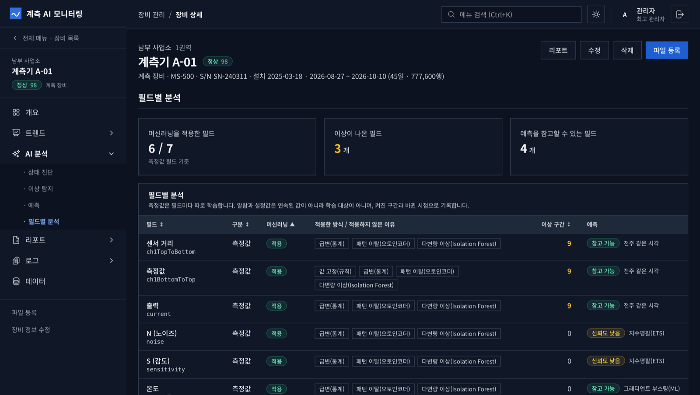
필드마다 머신러닝을 적용했는지, 어떤 방식을 썼는지, 적용하지 않았다면 왜인지 보여줍니다.
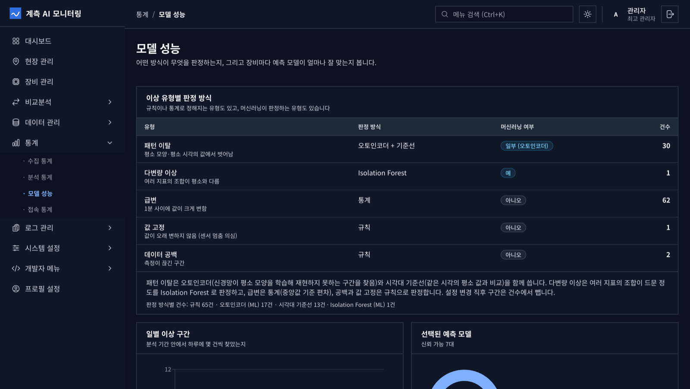
이상 유형마다 어떤 방식이 판정했는지, 전체 장비에서 몇 건인지 모아 봅니다.
05속도와 용량
데이터가 쌓여도
조회는 빠르게 유지됩니다
측정 데이터는 컬럼 저장 형식(Parquet)으로 쌓고 분석용 엔진 DuckDB 로 읽습니다. 필요한 열과 필요한 날짜만 읽기 때문에, 조회 시간은 쌓인 전체 양이 아니라 보려는 구간의 크기로 정해집니다.
45일 추이 조회
0.05초
장비 1대의 45일치 추이 차트를 여는 데 걸린 시간
544만 행 집계
0.1초
초 단위 원본 전체를 DuckDB 로 한 번에 훑어 집계
78만 행 적재
8초
45일치 기록 파일 하나를 올려 저장과 집계까지 마침
AI 분석
16초
장비 1대의 45일치를 학습하고 판정·예측까지 (중앙값)
시연용 데이터(장비 7대, 45일, 5초 간격, 544만 행)를 12코어 PC 에서 잰 값입니다. 서버 사양과 데이터에 따라 달라집니다.
빠른 속도를 유지하는 방법
기록을 장비별·날짜별로 나눠 압축 저장하고, 조회할 때는 해당 구간의 파일만 읽습니다. 등록할 때 1분 단위 집계를 미리 만들어 두어, 긴 기간의 추이도 원본을 다시 훑지 않고 그립니다.
1TB 에 약 2,000 장비·년
1초 간격으로 기록하는 장비 1대가 1년에 약 0.4GB 를 씁니다. 1TB 디스크면 장비 200대의 10년치, 4TB 면 800대의 10년치를 담습니다. 기록 간격이 길면 그만큼 더 들어갑니다.
| 장비 1대 · 1년 | 약 3,150만 행 (1초 간격), 약 0.4GB |
|---|---|
| 디스크 1TB | 약 2,000 장비·년, 약 600억 행 |
| 파일 하나 | 최대 2GB (압축 파일 기준, 설정으로 조정) |
| AI 분석 기간 | 최근 120일을 학습 (최대 400일까지 조정) |
| 예측 | 앞으로 7일 (끊기지 않은 14일 이상의 기록이 있을 때) |
용량은 시험 데이터로 잰 값에서 계산했습니다. 올린 원본 파일을 함께 보관하는 기준이며, 값의 변동이 큰 데이터는 더 많이 씁니다.
06설치와 운영
서버 한 대, 명령 한 번
Docker 가 도는 64비트 Linux 서버에 설치합니다.
# 1. 설정 파일을 만들고 비밀번호와 데이터 폴더를 적는다 $ cp .env.example .env # 2. 전체 스택 설치와 기동 $ docker compose up -d --build # 평소 운영 $ scripts/backup.sh /mnt/backup $ scripts/restore.sh <db dump> <data tar.gz> $ docker compose up -d --build # 업데이트
데이터는 서버 안에만
등록한 파일과 분석 결과는 설치한 서버의 디스크에 저장됩니다.
폐쇄망 설치
인터넷이 되는 PC 에서 이미지를 파일로 묶어 옮기면, 설치할 서버는 인터넷 없이 올라옵니다.
저장 위치 지정
측정 데이터와 데이터베이스를 둘 폴더를 .env 에서 정합니다. 용량이 큰 디스크를 따로 붙여 쓸 수 있습니다.
업데이트와 백업
업데이트하면 데이터베이스 구조 변경이 자동으로 적용됩니다. 백업은 데이터베이스 덤프와 데이터 묶음 두 파일로 나옵니다.
07자주 묻는 질문
도입 전에 많이 묻는 것
계측 AI 모니터링은 무엇인가요?
계측 장비가 남긴 시계열 기록을 등록하면 추이와 알람을 정리하고, 서버 안의 로컬 AI 가 머신러닝으로 이상 구간을 찾아 장비 상태를 점수로 보여주는 설치형 모니터링 시스템입니다. 서버 한 대에 Docker 로 설치합니다.
어떤 계측 장비에 쓸 수 있나요?
특정 장비 전용이 아닙니다. 레벨, 유량, 압력, 온도처럼 시간에 따라 값을 남기는 계측 장비라면 기록의 각 열을 측정값, 알람, 설정값으로 정의해 등록합니다. 처음 받는 기록 형식은 필드 정의를 한 번 추가해야 합니다.
데이터가 외부로 나가나요?
나가지 않습니다. 등록한 파일과 분석 결과는 설치한 서버의 디스크에만 저장되고, 머신러닝 학습과 판정도 그 서버 안에서 돕니다. 외부 AI 서비스나 클라우드로 데이터를 보내지 않으며 폐쇄망에서도 동작합니다.
어떤 AI 를 쓰나요? GPU 가 필요한가요?
머신러닝 모델 세 가지를 씁니다. 패턴 이탈은 오토인코더(신경망), 다변량 이상은 Isolation Forest, 예측은 그래디언트 부스팅과 지수평활(ETS) 가운데 검증 오차가 가장 작은 모델입니다. 여기에 통계와 규칙을 함께 씁니다. 모두 서버의 CPU 로 돌고 GPU 는 필요 없습니다.
데이터를 얼마나 적재할 수 있나요?
1초 간격으로 기록하는 장비 1대가 1년에 약 0.4GB, 약 3,150만 행을 씁니다. 1TB 디스크에 약 2,000 장비·년을 담을 수 있습니다. 시험 데이터로 잰 값에서 계산한 것이며, 값의 변동이 큰 데이터는 더 많이 씁니다.
데이터가 많아져도 빠른가요?
측정 데이터를 컬럼 저장 형식(Parquet)으로 장비별·날짜별로 나눠 저장하고 DuckDB 로 읽기 때문에, 조회 시간은 쌓인 전체 양이 아니라 보려는 구간의 크기로 정해집니다. 시연용 데이터에서 544만 행 집계가 0.1초, 45일 추이 조회가 0.05초였습니다(12코어 PC 기준).
실시간으로 수집하나요?
아닙니다. 장비에 직접 붙어 값을 받아 오지 않고, 장비나 수집기가 내보낸 기록 파일(csv, csv.gz)을 등록하면 자동으로 분석합니다.
설치는 어떻게 하나요?
Docker 가 도는 64비트 Linux 서버에 설정 파일을 만들고 docker compose up -d --build 를 한 번 실행합니다. 인터넷이 없는 곳에는 이미지를 파일로 묶어 옮겨 설치합니다. 백업과 복원 스크립트가 함께 들어 있습니다.
도입을 검토 중이신가요
장비 종류와 기록 파일 형식을 알려 주시면 시연과 설치 안내를 보내 드립니다.